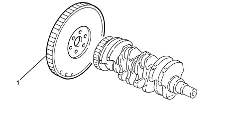
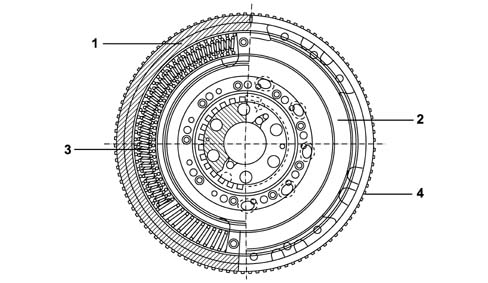
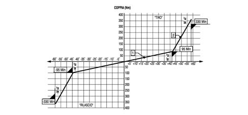

1024B ENGINE FLYWHEEL
- Path
- Descriptions > 10 ENGINE UNIT > 1024 CRANKSHAFT AND FLYWHEEL > 1024B ENGINE FLYWHEEL
- Kind
- system description
- Applies to
- engines: 2.0 JTS, 3.2 V6, 1.9 JTD 16V; all production periods
- Interactive page
- https://sloeber94.github.io/elrnDB-aGt/en/#/125000260
Applies to: engines: 2.0 JTS; all production periods
CONSTRUCTION FEATURES
Made from cast iron with a press-fitted, hardened steel ring gear (1) and balanced

Applies to: engines: 3.2 V6; all production periods
CONSTRUCTION FEATURES
Made from cast iron with a press-fitted, hardened steel ring gear and balanced
Applies to: engines: 1.9 JTD 16V; all production periods
CONSTRUCTION FEATURES
Twin flywheel shock absorber (DVA) This flywheel consists of two masses, one of which is fixed to the crankshaft and the other to the gearbox main shaft through the clutch plate. There is a twin ramp flexible damping system between these two masses produced through two pairs of springs whose intervention is differentiated according to the torque transmitted.
The clutch engagement, positioned between the twin flywheel and the gearbox, is made up of a rigid disc (without springs) which, on account of reduced inertia, improves the manoeuvrability of the gearbox.

1 - Mass fixed to the crankshaft
2 - Mass fixed to the gearbox main shaft
3 - Flexible damping system
4 - Ring gear
Diagram showing operation of twin ramp flexible damping system
